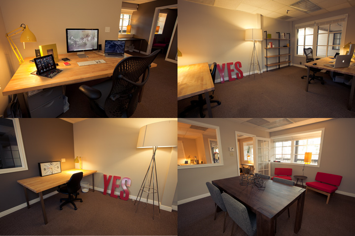

Art Suggestions
After three weeks in the new New Ezra and Style Hatch office space it is finally starting to take shape. Now there is plenty of room to expand the team with two or three talented people in the coming months.
As you can see all the walls are bare and empty. I would love to fill the walls with art, prints and interesting books. As I start to look for the right pieces this week, any suggestions you have would be amazing. What do you think should go on the walls?